Module N4
The big-picture circulatory map
It is tempting to picture the circulation as a pump connected to a run of pipes, but that image quickly leads to physiologic inconsistencies. A more useful model, simple enough to reason with yet rich enough to explain the shock states, treats the circulation as a single closed loop broken into a handful of interfaces where flow is handed off and where things can go wrong.
Interface I: Left Ventricle → Arterial System
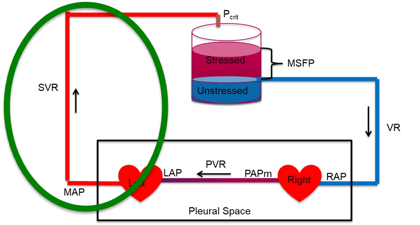
This interface reflects the heart's ability to generate forward flow through the large arteries into the arterioles. The effect of cardiac function on cardiac output is a function of several things. In simple terms, the cardiac output is defined by the relationship between the systemic vascular resistance and the pressure gradient between the left ventricular outflow tract and the downstream arterioles. A more in-depth discussion of these concepts is covered in more advanced modules, including the concept of ventriculo-arterial coupling (VAC).
Interface II: Arterioles → Capillaries
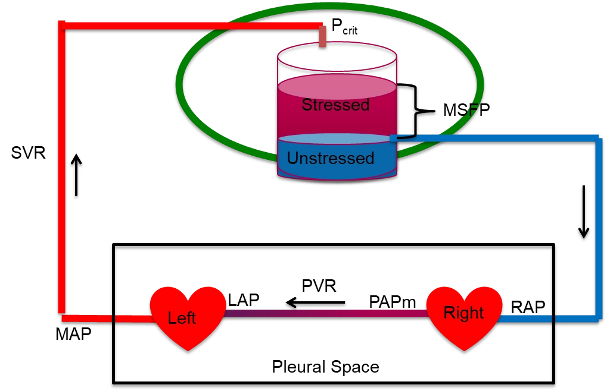
This is where macro meets microcirculation. Vasoconstriction or vasopressor use alters the arteriolar critical closing pressure (Pcrit). The Pcrit is the pressure at which a small vessel collapses and flow through it stops, so it, and not right atrial pressure, is the true downstream pressure for arterial flow. If the response is excessive and Pcrit increases dramatically, tissue perfusion can suffer, even if MAP appears normal. The concepts around this interface are covered in more advanced modules, but the take home point for our current learning purposes is that the properties of Interface II help explain why perfusion may suffer despite a seemingly reasonable MAP. Clinical surrogates like capillary refill time (CRT) and skin mottling score have emerged as useful, low-cost indicators of microvascular status and macro to microcirculatory coupling.
Interface III: Capillaries → Right Atrium
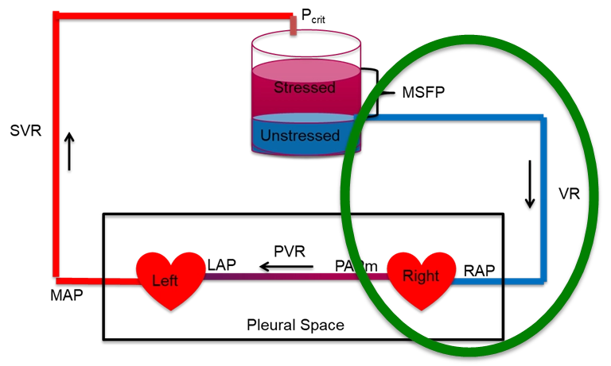
This interface reflects the efficiency of venous drainage from the microcirculation. Once blood passes through the capillaries, its exit into the venous system depends on the pressure gradient between the post-capillary space and central venous pressure (CVP). When CVP rises (due to fluid overload, mechanical ventilation, or RV dysfunction), this gradient narrows, impairing flow and venous return to the heart. An in-depth discussion of this interface is beyond the level of this module, but can be found in the more advanced modules.
Interface IV: Right Ventricle → Pulmonary Artery
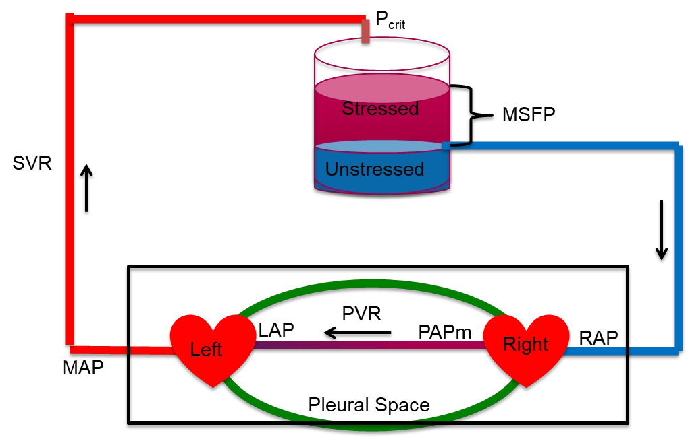
The final interface describes the RV-PA gradient, critical for maintaining a low RAP and for guaranteeing LV filling. The cardiac output is defined by the relationship between the pulmonary vascular resistance and the pressure gradient between the right ventricular outflow tract and the left atrium. Similar to the other interfaces, a more in-depth discussion of these concepts is covered in more advanced modules, including the concept of ventriculo-arterial coupling (VAC) as it applies to the pulmonary circulation.
Multi-interface integration: Heart-Lung Interactions
The thoracic cavity is the most physiologically active compartment of the cardiovascular system. Every breath, spontaneous or mechanical, simultaneously modulates venous return, RV preload, RV afterload, LV preload, and LV afterload. Heart-lung interactions are not a separate topic that follows hemodynamics. They are the dynamic glue that connects Interfaces I, III and IV in real time.
One equation behind every interface
The reason the interfaces are worth reviewing is that a single relationship governs each one. Flow through any segment is driven by the pressure that falls across it, divided by the resistance it meets. This is the Hagen-Poiseuille law reduced to its clinical skeleton:
Written out interface by interface, the same skeleton produces the pressure drops we measure at the bedside. On the arterial side the fall is from the MAP down to the critical closing pressure of the distal arterioles, not to zero and not to the right atrium, a subtlety worth naming because it is often misunderstood or ignored, as Magder describes eloquently in his account of the highs and lows of blood pressure (reference 3).
| Circuit | Upstream − downstream | Resistance |
|---|---|---|
| Arterial (Interface I) | MAP − Pcrit | SVR |
| Macro-Micro Circulation (Interface II) | Pcrit − Pms | Rcapillary |
| Venous return (Interface III) | Pms − PRA | Rv |
| Pulmonary (Interface IV) | mPAP − LAP | PVR |
Each row equals CO times its resistance, and the oxygen-delivery equation from module 2, DO2 = CO × CaO2, hangs on the very same framework. Cardiac output is the common denominator running through all of them.
Why the loop is the point
The loop is closed, so over any stretch of time the blood returning to the heart has to equal the blood the heart pumps out. Venous return and cardiac output are not two separate problems. They are two viewpoints of one system in balance, and a lasting mismatch is impossible: the heart can only eject what the veins deliver to it, and the veins can only return what the heart has forwarded. Hold onto that constraint, because the next module turns it into one of the most useful pictures in hemodynamics. Before we move on, let's discuss cardiac function and venous return on a more granular level.
Cardiac function
The cardiac function (Frank-Starling) curve is the graphical way to state what the heart contributes to that balance. It plots flow out of the heart against right atrial pressure, PRA, which serves as a surrogate for preload. As PRA rises, the myocytes are stretched further during diastolic filling, contractile force increases through length-dependent activation, and cardiac output rises. The curve is steep at low filling pressures and flattens as the ventricle reaches the limit of what added stretch can buy.
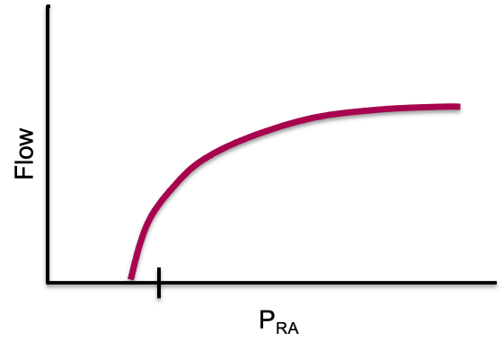
The effect of pleural pressure. The right atrium is a thin-walled chamber, so its pressure is strongly influenced by the pleural pressure surrounding it. If flow were transiently stopped, the measured PRA would equilibrate toward pleural pressure. In a spontaneously breathing person pleural pressure is slightly negative relative to atmosphere and it swings with every breath, so the cardiac function curve shifts left and right through the respiratory cycle. Spontaneous inspiration lowers pleural pressure, lowers PRA, and shifts the curve leftward, reflecting a greater effective preload for any given intravascular filling. Positive pressure inspiration during mechanical ventilation raises pleural pressure, raises PRA, and shifts the curve rightward, which makes preload look higher than it truly is. What a right atrial pressure measurement reports is therefore never intracardiac pressure alone. It is the balance between the pressure inside the chamber and the pressure around it.
Changes in cardiac function. The position and slope of the curve are set by the performance of the pump itself. Reduced contractility, a disproportionate rise in afterload, or severe bradycardia move the curve downward, so any given preload yields a lower stroke volume and a lower cardiac output. Improved contractility, reduced afterload, or an optimal heart rate move it upward, so the same preload yields more flow. The curve therefore describes two things at once: how preload-dependent the ventricle is, and how well it converts that preload into forward flow. This is why venous return can never be interpreted in isolation. Pump function has to be considered in parallel.
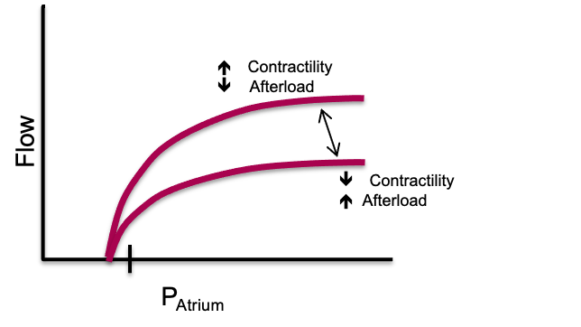
The venous reservoir
Before we move on, it is worth revisiting a fact mentioned previously: most of the blood volume is not in the heart or the arteries, it is sitting in the veins. The venous system behaves like a large, compliant reservoir, and the blood in it comes in two functional flavors. Unstressed volume is the blood needed just to fill the vessels to their natural, unstretched shape, like the volume in a limp balloon. It fills the container but exerts no outward push and does nothing to drive flow back to the heart. Stressed volume is the additional blood that actually distends the vessel walls. That stretch creates an outward pressure, and the average of that pressure across the whole system is the mean systemic filling pressure (Pms, also written MSFP). Because so much volume is parked in high-capacitance veins, Pms is actually quite low, on the order of 8 to 10 mmHg.
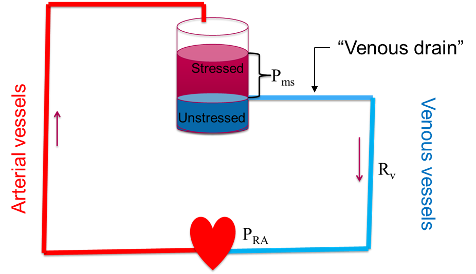
What sets Pms is volume and tone, not the heart
A century-old experiment makes the point vividly. In the 1890s Bayliss and Starling briefly stopped a dog's heart. With flow arrested, the arterial and venous pressures collapsed toward each other and met at a single value, the mean systemic filling pressure. Restart the heart and the arterial side rises while the right atrial side falls, but the average, Pms, is unchanged. The lesson is that Pms does not depend on the left ventricle. It depends on only two things: the volume in the reservoir, which we change by giving or removing fluid, and the compliance or tone of the veins, which we change with sympathetic activity or vasoactive drugs. Adding fluid expands the stressed compartment and shifts Pms upward. A vasopressor with venular tropism decreases venous compliance and converts unstressed volume into stressed volume, raising the effective filling pressure without a drop of added fluid.
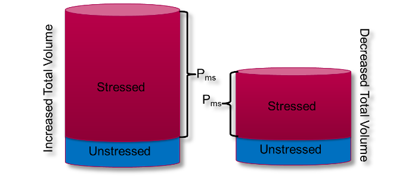
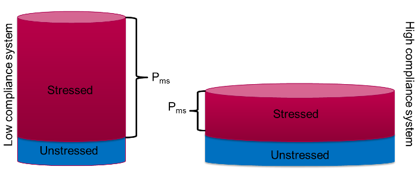
Venous return is a pressure gradient
With Pms defined, venous return becomes simple. Blood moves back to the heart down a pressure gradient, from the upstream reservoir (Pms) to the downstream right atrium (PRA), against the resistance of the venous circuit:
Three key features governing venous return
Three features carry most of the physiology. First, the point where RAP has risen such that the gradient between it and the filling pressure, Pms, is zero represents the x-intercept and the point where venous return is zero. If we assume that PRA does not change, adding volume or tightening venous tone (both of which increase Pms) causes the x-intercept to slide right to a higher Pms. The net effect is a higher venous return at any given RAP.
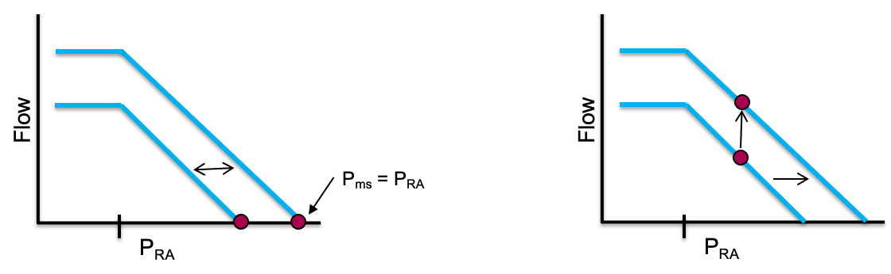
PRA is largely governed by two factors. As Bayliss and Starling showed in their early experiments, cardiac function moves blood away from the right heart and lowers PRA. Since most of the body's blood remains in high capacitance veins (the reservoir) during normal circulation, cardiac function has little effect on Pms. Therefore, lowering the PRA increases the driving gradient of blood from the reservoir toward the heart and increases venous return. Additionally, recall that the heart is located within the thoracic cavity. Because the walls of the right atrium are thin, pressure within the thoracic cavity (pleural pressure) is easily transmitted to the right atrium. Thus, changes in pleural pressure impact PRA.
The second major feature of the venous return curve involves the slope of the curve, represented by the inverse of venous resistance. Therefore an increase in resistance would lower the slope of the curve and a decrease in resistance would increase the slope. It is worth noting that the small veins and venules of the body constitute such a large cross sectional area that they contribute very little to the overall Rv. Rather, vessels which constitute a much smaller cross sectional area, such as the vena cava, account for most of the venous resistance within the body.
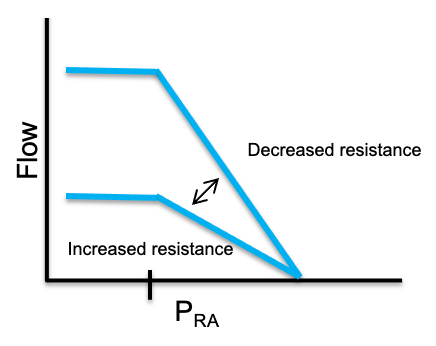
One more feature catches people out. Take a close look at the curve. As PRA falls relative to Pms, cardiac output increases.
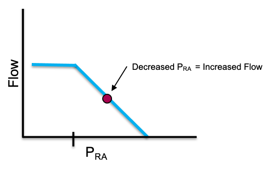
But as RAP falls, the curve does not rise forever. It flattens into a plateau of maximal venous return. The rationale behind this has to do with the principle of the vascular waterfall and maximal venous return, which is covered in depth in more advanced modules. The great veins in the abdomen stay open only while the pressure inside them exceeds the pressure around them, a positive transmural pressure. As RAP drops, the intravascular pressure within the abdominal inferior vena cava falls below the surrounding pressure (roughly atmospheric, since abdominal pressure is near zero) and the veins collapse, behaving as a vascular waterfall, or Starling resistor. Beyond that point, lowering RAP further pulls back no additional blood. The net result is that the largest gradient the system can ever use is Pms minus the pressure surrounding the vessels. This phenomenon acts as a flow limiting step and is responsible for the plateau seen on the venous return curve.
Summary
Understanding the components of the cardiac function and venous return curves allows the failure modes that drive shock to jump out. Lose volume or venous tone and Pms falls, shrinking the gradient from the top. Let the right atrial pressure climb relative to Pms, whether from a failing right heart or from positive pleural pressure transmitted to the thin-walled right atrium, and the gradient shrinks from the bottom. Resistance matters too: most of it sits not in the countless small venules but in the great veins, so anything that narrows the cavae, such as raised intra-abdominal pressure or positive pressure, flattens the return curve and limits flow. Whichever term moves, because the loop is closed, left ventricular cardiac output follows.
If venous return and cardiac output must balance, how do they settle on one operating point? In the next module we will discuss how they work together and then apply them to the shock-type grid.
References
- Sylvester JT, Goldberg HS, Permutt S. The role of the vasculature in the regulation of cardiac output. Clin Chest Med. 1983 May;4(2):111-126.
- Rola P, Kattan E, Siuba MT, Haycock K, Crager S, Spiegel R, Hockstein M, Bhardwaj V, Miller A, Kenny JE, Ospina-Tascon GA, Hernandez G. Point of View: A Holistic Four-Interface Conceptual Model for Personalizing Shock Resuscitation. J Pers Med. 2025;15(5):207. doi:10.3390/jpm15050207. Free full text.
- Magder S. The highs and lows of blood pressure: toward meaningful clinical targets in patients with shock. Crit Care Med. 2014;42(5):1241-1251. doi:10.1097/CCM.0000000000000324.
- Guyton AC, Hall JE. Textbook of Medical Physiology. 12th ed. Philadelphia: Saunders Elsevier; 2011.
- Hamzaoui O, Jozwiak M, Geffriaud T, Sztrymf B, Prat D, Jacobs F, Monnet X, Trouiller P, Richard C, Teboul JL. Norepinephrine exerts an inotropic effect during the early phase of human septic shock. Br J Anaesth. 2018;120(3):517-524. doi:10.1016/j.bja.2017.11.065.
- Permutt S, Bromberger-Barnea B, Bane HN. Alveolar pressure, pulmonary venous pressure, and the vascular waterfall. Med Thorac. 1962;19:239-260. doi:10.1159/000192224.